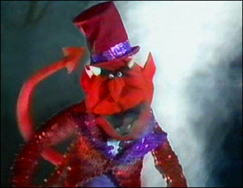

The Devil is, in many cultures, the central embodiment of evil usually referenced as a rebellious demon who is the enemy of God. Amongst his many names, he has been called Satan, the "Prince of Darkness," Beelzebub, Lucifer, Mephistopheles, and most commonly, the Devil (in some literature implying that amongst a myriad of devils, he is the primary). In many cultures, he is recognized in visual form as having been derived from the Greek gods Pan and Dionysus in appearance and modus operandi. As seen in episode 420 of The Muppet Show in a recreation of the Charlie Daniels Band song "The Devil Went Down to Georgia," the Devil challenges Johnny to a fiddling match. The stakes are Johnny's soul against the Devil's fiddle of gold. After a volley of hickory stump plucking, the Devil admits defeat and vanishes in a puff of smoke. "The Devil Went Down to Georgia" could be viewed as a variation on a Russian folk tale/parable set to music in 1918 by composer Igor Stravinsky, entitled Histoire du soldat. The essential difference between the two versions is that in "The Devil Went Down to Georgia" the protagonist wins, whereas in "The Soldier's Tale", the protagonist loses. The Devil also appears as the former scorned lover of an angel in the song "You're No Good" in the same episode. It was also implied that the Devil is Alice Cooper's boss in episode 307, and that the guest star is trying to recruit lost souls for his master. After Alice fails to win Miss Piggy over to the dark side, it becomes clear that the Devil does not pay commissions on hourly rentals. In the final moments of the closing number, "School's Out," Alice sheds his cap and gown to reveal himself dressed as the Devil himself in a torn, red leotard replete with pointy tail, top hat, and pitchfork.
